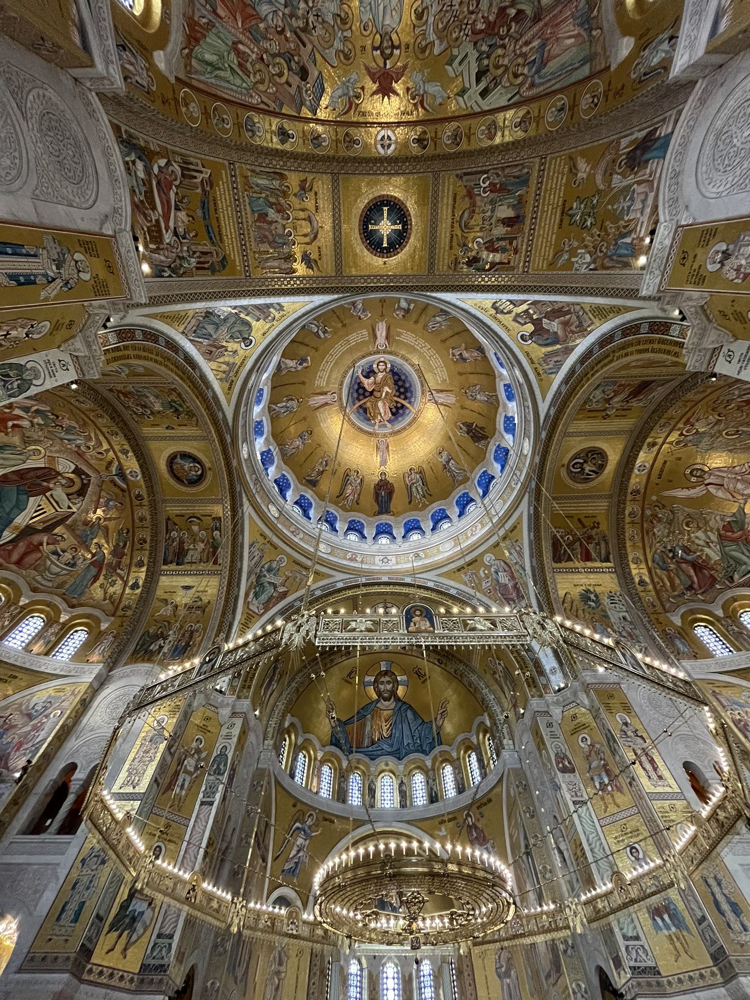
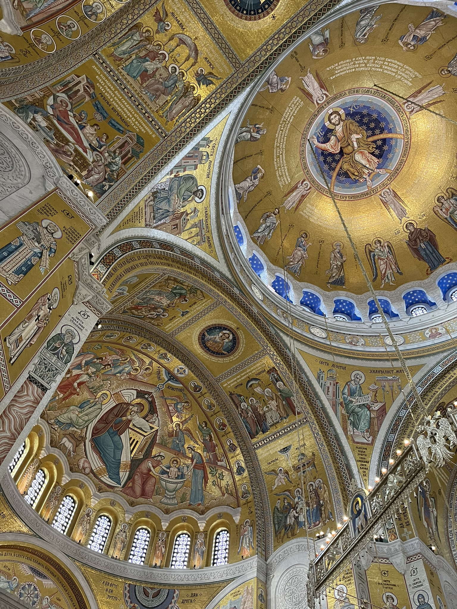
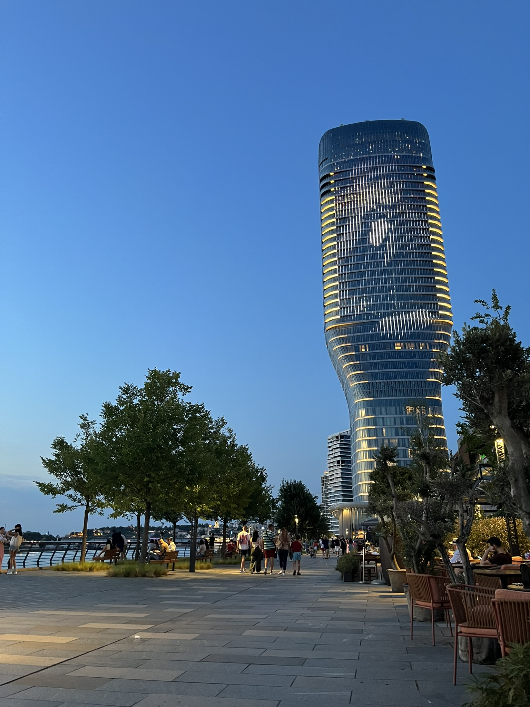
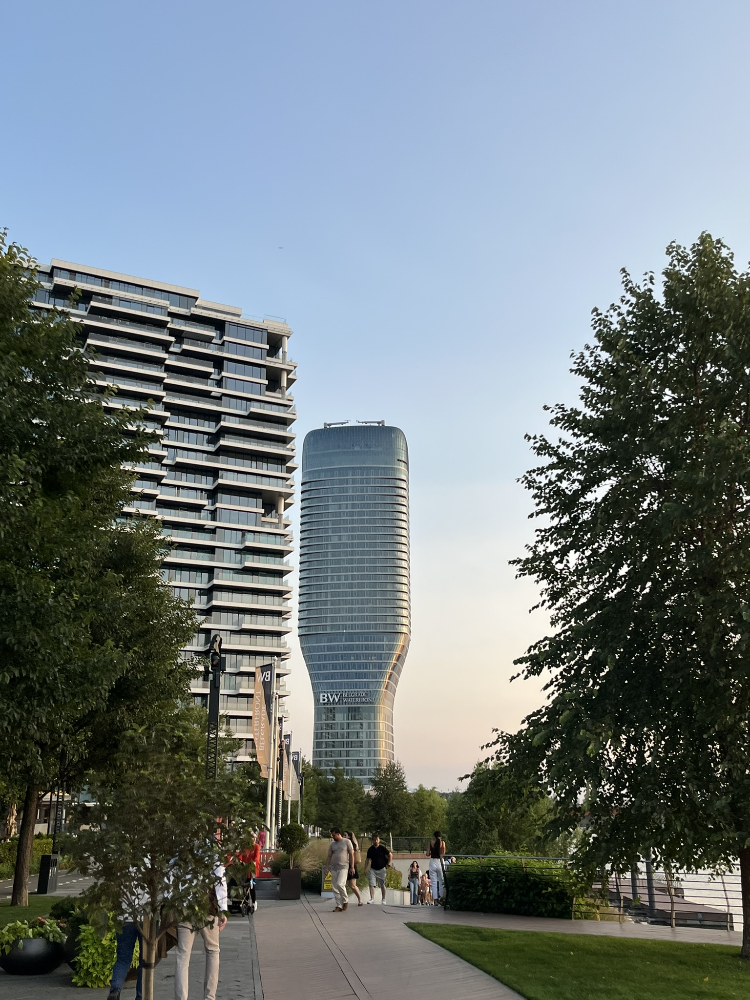
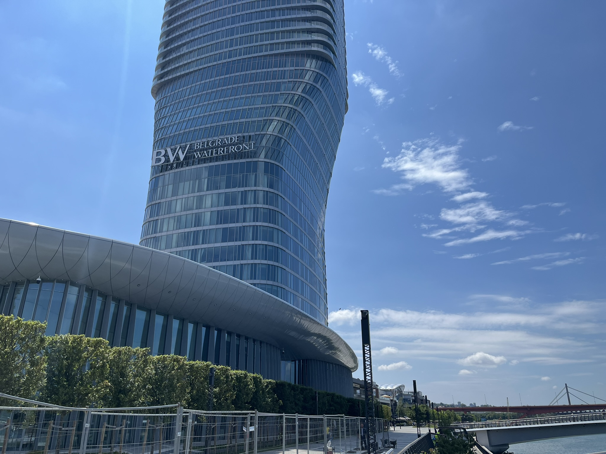
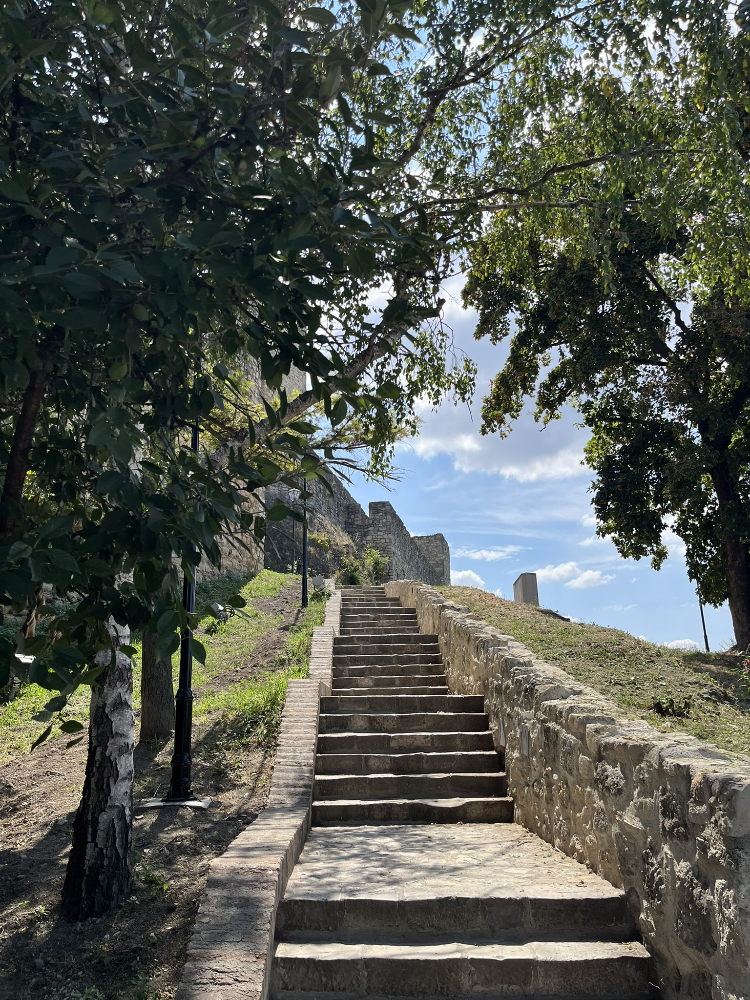
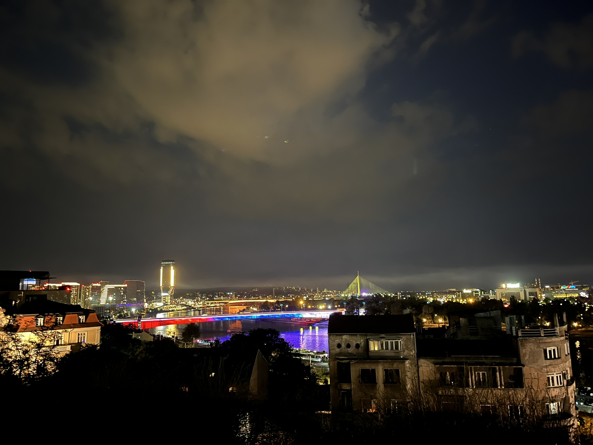
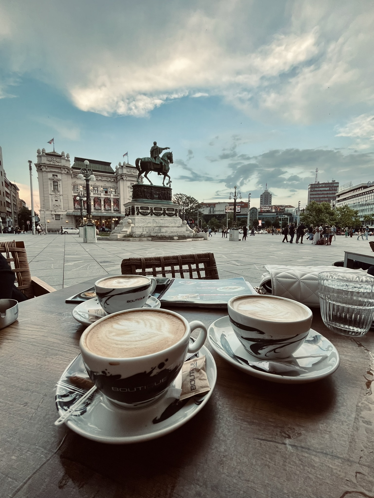
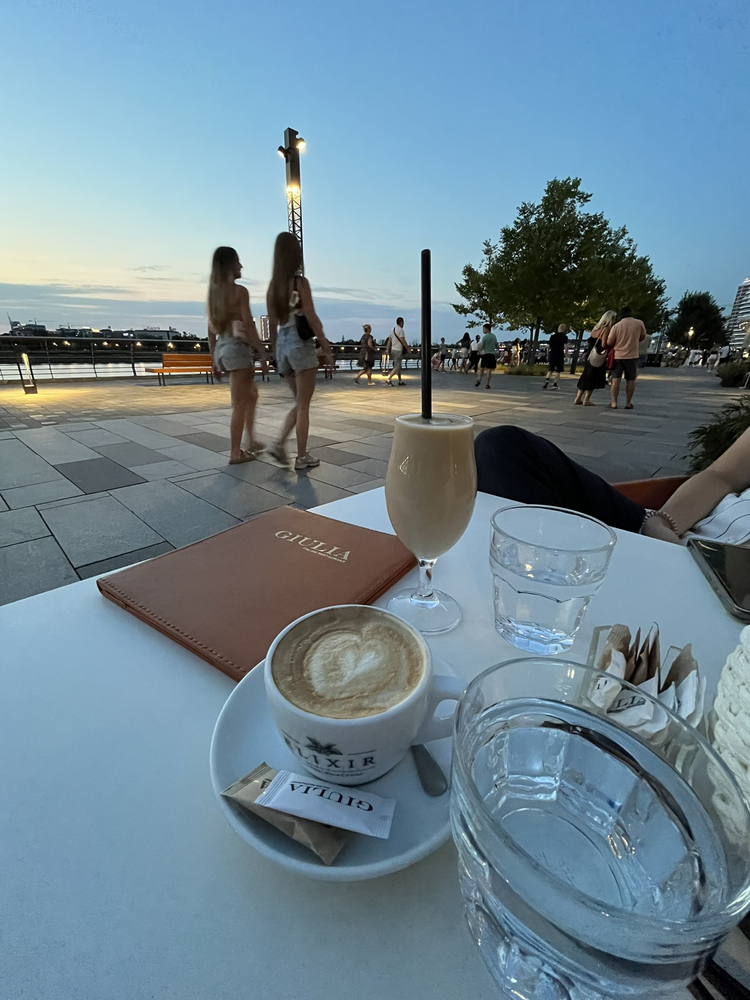

Belgrade, the vibrant capital of Serbia, sits at the confluence of the Danube and Sava rivers, blending
centuries of history with a dynamic modern spirit.
Known for its resilient character, the city has been shaped by Roman, Ottoman, Austro-Hungarian, and
Yugoslav influences, each leaving a distinct architectural
and cultural mark. From the imposing Kalemegdan Fortress overlooking the riverbanks to the bohemian charm of
Skadarlija street, Belgrade offers a rich tapestry
of experiences. Its nightlife is legendary, with floating clubs on the rivers and buzzing cafés that never
seem to sleep. Despite its tumultuous past, Belgrade
pulses with creativity, warmth, and an unmistakable energy that captivates visitors and locals alike.


St Sava Temple
Located on the Vračar plateau, the temple honors Saint Sava, the founder of the Serbian Orthodox
Church, whose remains were believed to have been burned on this site by Ottoman authorities in
1595. Construction began in 1935 and continued for decades, with the church finally consecrated in
2004. Designed in the Neo-Byzantine style, it features a massive dome, intricate mosaics, and a capacity of
over 7,000 worshippers.
Belgrade Tower
Belgrade Tower (Kula Belgrade) is the architectural centerpiece of the Belgrade Waterfront
development and currently the tallest building in Serbia and the Balkans. Rising to a height of
168 meters (551 feet) with 40 floors, the tower is a striking symbol of modern Belgrade’s
transformation and ambition.



Kalemegdan
Kalemegdan is Belgrade’s most iconic historic site, blending ancient fortifications with serene
parkland at the confluence of the Sava and Danube rivers.
Originally established as the Roman settlement Singidunum, Kalemegdan evolved into a strategic
fortress that witnessed centuries of conflict and rule under Byzantine, Serbian, Ottoman, and
Austro-Hungarian empires. The Belgrade Fortress, its centerpiece, dates back to 279 BC and has
been rebuilt multiple times, most notably by Emperor Justinian I and Serbian despot Stefan
Lazarević.




Serbian Coffee Culture
Serbian coffee culture is a deeply rooted social tradition centered around domaća kafa—strong,
unfiltered coffee brewed in a džezva. More than just a drink, coffee is a reason to gather,
talk, and slow down. Whether at home or in a kafana, offering coffee is a gesture of
hospitality, and lingering over a cup is part of everyday life.
Click to read fun facts about Belgrade
- Belgrade is one of the oldest cities in Europe, with a history dating back over 7,000 years.
- The city has been destroyed and rebuilt more than 40 times throughout its history.
- The city has a vibrant nightlife scene, with numerous bars, clubs, and floating river clubs known as "splavs."
- Belgrade hosts the annual Belgrade Beer Fest, one of the largest beer festivals in Southeast Europe.